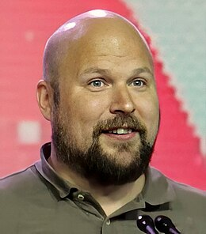

Marcus Persson, alias "Notch", est un suédois née le 1er juin 1979 à Stockholm.
Il est le développeur de la toute première version de minecraft, qu'il a réalisée en 6 jours seulement.
À cette époque, le jeu ressemblait à ceci :
 zoom_in
Survoler ici
zoom_in
Survoler ici
zoom_in